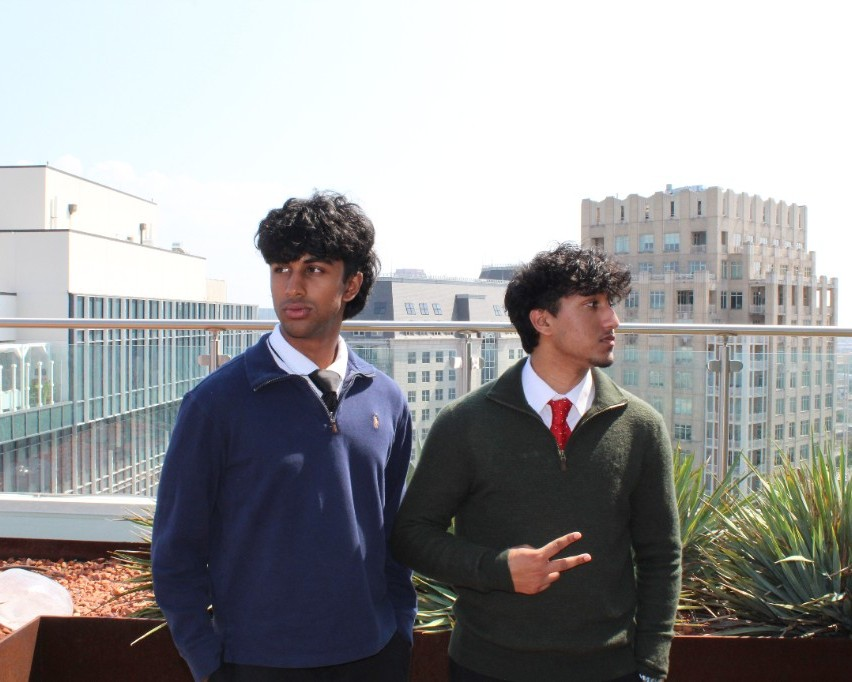

origin
managent
The work as it stands.
learn more →nithilan karthik: my thesis
They’re about designing systems that make existing intelligence more useful at scale.

origin
The work as it stands.
learn more →question
The problem, before it had an answer.
learn more →then
Rooms and roles that shaped the way you work.
learn more →for whom
Someone the work was actually for.
learn more →off hours
What you return to when the work is done.
learn more →held
A line you actually believe.
learn more →